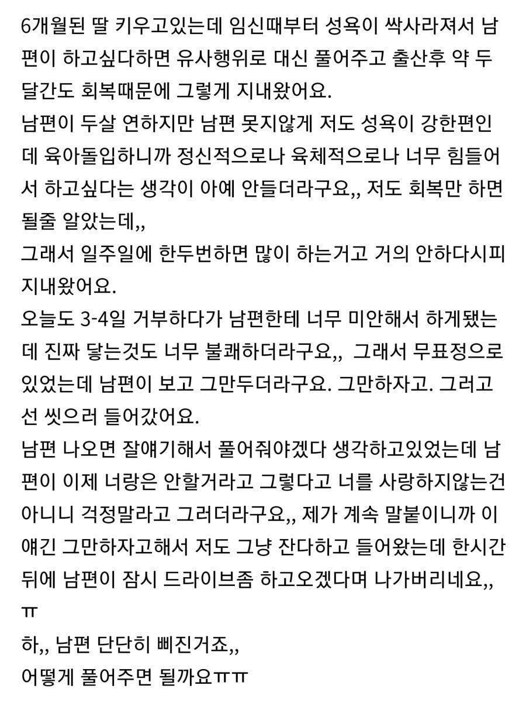

어어 이거

어어 이거
결혼 못한게 참 다행이다 싶다... 나도 상처 받기 싫고 상처 주기 싫고
그런가 결혼하고 임신하고 만삭부터 출산하고 지금까지 10개월쯤 된거같은데 그안에 한 2~3번했나..... 할맘도 잘안들던데 서로 힘들어서...
혹시 제 남편이신가요?
ㅋㅋㅋ 볼 때마다 남일 같지 않구만.. ㅋㅋㅋ
저렇게라도 해주는게 어디냐
우리와이프는 애들 자고있어도 불안하다고 애들 할머니집 갈때 아니면 안해주는데
좃같음
둘 다 이해는 가고
저 글이 팩트만 있고 뺀 이야기가 없다는 가정 하에
남편도 아내를 위하지 못했고 아내도 남편에게 좀 더 잘 말하고 했으면 좋았을듯
대화로 풀어야 하는데 남편이 대화를 할 맘이 없으니 큰일이네
노 모어 딕
자존심 존나 상했겠네
남자한테 하면 안되는 선넘는 행동이 몇개 있는데 그중 하나를 갈겼으니 풀려면 고생 깨나 할듯
당한거 같은데
이혼ㄱ
입으로 한번 해주면 풀림
노 모어 푸시
이건 부부상담 받거나 진솔하게 이야기 해야 풀어나갈 문제일듯. 소통의 문제라 서로 마음에 있던 이야기 잘 꺼내서 해결됐으면 좋겠네
물론 서로다 힘든거 있고 이유야 있겠지만 애 낳을려는 목적으로만 결론한것도 아니고 관계할려고만 결혼한것도 아니니 서로 대화하고 서로 이해해야할텐데 그것도 대화를 하려는 마음이 서로 있어야 가능한거고 둘 중 하나가 포기하거나 하면 상대가 고통스러움 대화도 안하고 아니 안되고 상황은 상황대로 나아지지않고....결혼할때 대화해서 결혼했으면 대화로 풀어야할텐데 대화로 풀지 않는 사람,혹은 대화하려하지않는 사람은 책임감 없는거임 진짜
노총각이지만 주위에 저런케이스들 이야기를 많이 들어서 그런가 둘 다 이해는 됨….
남자 입장에선 자존심 엄청 상할듯 이거 오래된거같은데 후기 궁금하네
창녀촌으로갑시다
나중에 똑같은 꼴 당해도 쳐 짜지 마라ㅋㅋㅋ
내 친구도 저 상태에서 나가서 풀던지 알아서하라 듣고나서 결국 바람나서 이혼함..